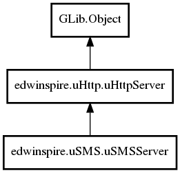

edwinspire.uSMS.uSMSServer Reference Manual
Packages
libspire_usms
edwinspire
uSMS
uSMSServer
uSMSServer
connection_handler_virtual
connection_handler_virtual_usms
runuSMS
uSMSServer
Object Hierarchy:

Description:
public
class
uSMSServer
:
uHttpServer
Namespace:
edwinspire.uSMS
Package:
libspire_usms
Content:
Creation methods:
public
uSMSServer
()
Methods:
public
virtual
bool
connection_handler_virtual_usms
(
Request
request,
DataOutputStream
dos)
public
override
bool
connection_handler_virtual
(
Request
request,
DataOutputStream
dos)
public
void
runuSMS
()